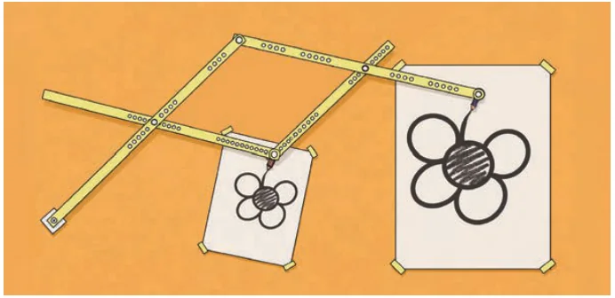
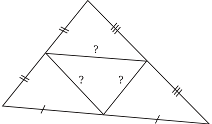
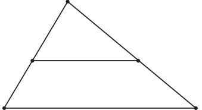
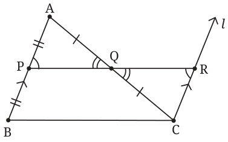
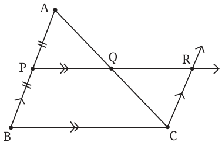
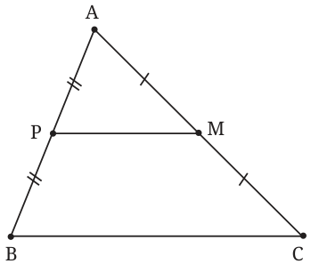
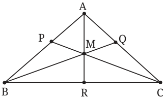
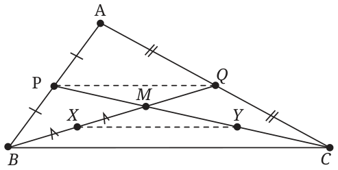
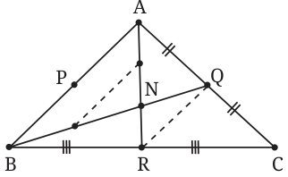
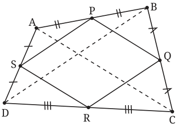

We saw that parallelograms have several nice geometric properties. These properties make the parallelogram a versatile shape with many real-world applications. In physics, a fundamental law uses parallelograms to combine certain physical quantities like forces, as you will learn in a later year. Parallelograms are used in several mechanical linkages, such as the parallel motion linkage discovered by James Watt, which formed an important part of his steam engine. His design used the concept behind another parallelogram-based device called a pantograph, which can make exact scaled copies of a drawing: search the internet for a video showing how a pantograph works. It is ingenious!

Parallelograms also serve as a powerful tool within geometry. Let us illustrate this by using parallelograms in a clever way to prove an important fact about triangles. We will discover this fact through exploration.
12.3.1 An Important Property of Triangles

On a piece of paper, draw and then cut out two copies of the same triangle. Keep one copy aside. On the other, mark the midpoint of each side. (You can do this by folding the paper to join two vertices at a time.) Draw the triangle made by the three midpoints and cut the paper along each of these lines. Now you have four smaller triangles. Compare them to each other and to the intact copy of the original triangle. What do you notice?
It appears that all four smaller triangles are congruent to each other! And each seems to be a smaller copy of the original triangle. Verify that this pattern holds for triangles of other shapes.
Here is one idea. The difficulty might be because we are considering too many new things at once: three new points and three new segments. Can we try to break this down into steps?

Let us see what happens with just one of the three new segments. Can you make a guess about this new segment, specifically about its direction and length compared with the unused third side? The triangles you cut earlier will help. It appears that the segment is parallel to the third side and has half the length! Let us try to justify this using reasoning.
Geometric reasoning: To set up, suppose that in \(\triangle ABC\), P and Q are the midpoints of side AB and AC respectively. Now comes the key idea. Construct the line \(l\) through C parallel to BA. Suppose it intersects line PQ at point R.
(See the comment about this line immediately after the statement of Theorem 6.)

In \(\triangle APQ\) and \(\triangle CRQ\), we have \(AQ = CQ\),
\(\angle AQP = \angle CQR\) (vertically opposite angles), and
\(\angle APQ = \angle CRQ\) (since \(AP \parallel RC\) by construction).
So \(\triangle APQ \cong \triangle CRQ\) by AAS.
Therefore \(PQ = QR\) (by congruence) \(= \frac{PR}{2}\) and \(CR = AP\). Combining \(CR = AP\) with \(AP = BP\), we get \(CR = BP\). Hence by Theorem 5 (equal parallel sides test), BCRP is a parallelogram. This gives \(PQ \parallel BC\) and also \(PQ = \frac{PR}{2} = \frac{BC}{2}\). We have deduced the following important fact.
Theorem 6 (Midpoint Theorem): The segment joining the midpoints of two sides of a triangle is parallel to the third side and has half the length.
In the reasoning for this theorem, the idea to take a completely new line \(l\) appeared out of nowhere, and worked like magic. What is your reaction to this? Do you feel a sense of wonder? Do you perhaps feel discouraged because it seems impossible to think of such an idea on your own? This type of auxiliary construction is a classic geometric trick that one learns with experience, so no need to be disheartened! See Exercise 15 at the end of the chapter for another proof that uses a different, slightly less magical construction.
Can you now prove the original claim about cutting \(\triangle ABC\) into four congruent parts by using midpoints of all three sides? You are asked to do this in Exercise Set 12.3 Q1 below.
Geometric reasoning: To set up, take \(\triangle ABC\) and suppose the line through midpoint P of AB, drawn parallel to BC, meets AC at point Q. Again draw the line parallel to BA through C, intersecting line PQ at point R. Tracing the proof of the Midpoint Theorem backwards works easily as follows.

BCRP is a parallelogram, so \(CR = BP\).
\(BP = PA\) and \(\angle AQP = \angle CQR\) (vertically opposite angles).
Combining with \(CR \parallel BA\), \(\triangle APQ \cong \triangle CRQ\). (Why?)
This gives two equalities.
First, \(AQ = QC\), so Q is the midpoint of AC.
Second, \(PQ = QR\), so \(PQ = \frac{PR}{2} = \frac{BC}{2}\).
We have deduced the following important fact. It can be considered a converse of the Midpoint Theorem, for reasons we will see in Exercise 22 at the end of the chapter.
Theorem 7 (Converse of the Midpoint Theorem): The line drawn through the midpoint of one side of a triangle and parallel to another side bisects the third side (and the resulting segment has half the length of the parallel side).
Let us see a different reasoning to justify Theorem 7. Read this short proof carefully.

Another proof of Theorem 7. Recall our previous setup: the line parallel to BC through midpoint P of AB meets AC at point Q. Ignore this line for now and instead consider the midpoint M of AC. We want to show \(M = Q\). We have \(PM \parallel BC\) by the Midpoint Theorem. Therefore line PM = line PQ, because there is a unique line parallel to BC through P. As lines PM and PQ coincide, they must intersect AC in the same point. Thus \(M = Q\). This is what we wanted!
We used the Midpoint Theorem to prove its converse! This may look like cheating because, as emphasised earlier, the truth of a statement and of its converse are separate issues. But there is no mistake here. There is a key new point in this proof, namely that there is a unique line through a given point and parallel to a given line. This proof illustrates that sometimes we can use a theorem to prove its converse.
In Grade 10, we will generalise Theorem 7 by dropping the condition that P is the midpoint of AB and assuming only that \(PQ \parallel BC\). Can you guess the conclusion in this case? (Hint: the name of the more general theorem includes the word proportionality.)
12.3.2 A Surprising Property of Medians
The Midpoint Theorem allows us to deduce an important fact about triangles. Let us discover it experimentally. In \(\triangle ABC\), suppose P, Q and R are the midpoints of side AB, AC and BC respectively. Instead of joining the midpoints with each other as we did earlier, draw segments AR, BQ and CP. These are called the medians of \(\triangle ABC\). What do you see? Repeat this for several triangles and see that the three medians always seem to be concurrent, meaning they pass through a common point!

There is more! Assume for the moment that the medians are always concurrent. Let M be the common point where they meet. Compare the lengths of the two parts CM and MP of the median CP, and do the same for the other two medians. Do you see a pattern? It appears that the ratio \(CM : MP = 2 : 1\). We will now show why this is always true.
Geometric reasoning: It seems difficult to keep track of the three medians at once, so let us first examine only two medians CP and BQ. Call their intersection point M. We want to show that \(CM = 2MP\) and \(BM = 2MQ\).

We have not yet seen any theorem that gives a \(2 : 1\) division of a segment. The Midpoint Theorem only gives a \(1 : 1\) ratio. So to show that \(CM = 2MP\), one idea is to bisect CM and try to show that the resulting three parts of CP are equal.
Let Y and X be the midpoints of CM and BM respectively. Now we can use the Midpoint Theorem in \(\triangle ABC\) and in \(\triangle MBC\)! We get that PQ and XY are parallel to BC and hence to each other. Moreover \(PQ = XY = \frac{BC}{2}\). So \(\triangle MPQ \cong \triangle MYX\) by ASA (How?). Therefore \(MQ = MX = XB\) and \(MP = MY = YC\). This shows \(CM : MP = 2 : 1 = BM : MQ\).
What about the third median AR? We can repeat the argument in the previous paragraph with medians AR and BQ! Let N be the point at which the AR and BQ intersect.

Now the same reasoning gives \(BN : NQ = 2 : 1 = AN : NR\). (Use Fig. 12.19 if you wish to repeat the reasoning.) We already had \(BM : MQ = 2 : 1\), so \(BM : MQ = 2 : 1 = BN : NQ\). But this means M and N have to be the same point, because there is only one point that divides BQ in a given ratio. Thus M lies on all three medians and divides each median in the ratio \(2 : 1\). We have deduced the following important fact.
Theorem 8: (Centroid Theorem) The three medians of \(\triangle ABC\) pass through a common point, which divides each of the medians in the ratio \(2 : 1\), with the longer part connecting to the vertex. This point is called the centroid of \(\triangle ABC\).
We started this section by examining the triangle formed by midpoints of the sides of a triangle. What happens if we use midpoints of the sides of a quadrilateral to make another quadrilateral? Experiment and see what this new quadrilateral looks like. It appears to be a parallelogram! Let us try to justify this using reasoning.

Geometric reasoning. Suppose the midpoints of sides AB, BC, CD and DA of a quadrilateral ABCD are P, Q, R and S respectively. The Midpoint Theorem applied to \(\triangle ABC\) and to \(\triangle ADC\) gives, respectively, \(PQ \parallel AC\) and \(SR \parallel AC\). So \(PQ \parallel SR\). Using the Midpoint Theorem in \(\triangle BCD\) and in \(\triangle BAD\) gives \(QR \parallel PS\). Therefore PQRS is a parallelogram.
We have deduced the following interesting fact, also known as Varignon’s theorem.
Theorem 9 (Midpoint Theorem for Quadrilaterals): The midpoints of the four sides of a quadrilateral are the vertices of a parallelogram.
This is called the Varignon parallelogram of the original quadrilateral.